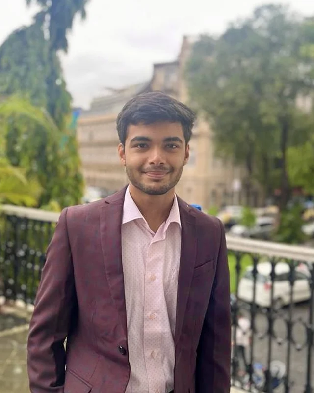

Mumbai, India · open to remote
Ismail Wangde
I build ML systems end to end — raw data to production.
Data Scientist at Fundly.ai, working on credit risk models and LLM systems. Before that, 4TB pipelines at InventoHub and medical imaging research at Nanavati Hospital.

Cookassist
A Hindi voice assistant for a home kitchen — it reads the recipe out loud, answers questions mid-cook, and works out what needs prepping tonight for tomorrow.
I built it to kill a daily manual routine in my own house, not as a portfolio demo. That constraint drove every decision: it speaks and listens in Hindi, it has to work with wet hands, and it has to work when the wifi drops — so it runs offline as a PWA on the home network.
It checks the pantry before you start, walks the steps one at a time, and projects tomorrow's prep from tonight's plan.
- Python
- FastAPI
- SQLite
- Offline PWA
- LLM
- Hindi TTS / ASR
istock
Transparency-first equity research, built as a deliberate counter to black-box “AI stock picker” products.
Everything that goes into a verdict is shown on the page — and so is everything that argues against it. The screenshot is a real output: 7 supporting signals against 9 risk signals, each with the actual number behind it, plus 40 more lower-signal factors you can expand. No blind buy or sell call.
Underneath it is a 12-module fundamental scoring engine and a QuantConnect/LEAN harness that cost- and regime-stress-tests published strategies, rejecting the ones that don't survive net of real trading costs. Most don't, which is the point. Next up is ML meta-labelling — the rules make the trades, and a model decides when to trust the rule.
- Python
- QuantConnect / LEAN
- pandas
- Backtesting
Other things I've built
Scroll sideways · click any card for detail
- Computer Vision collection detection and tracking, OCR, preprocessing, segmentation Repo
- NLP & Speech collection NER, semantic search, OCR question answering, transformers Repo
- Noise Cancellation CNN + LSTM over STFT spectrograms, trained on audio I recorded myself Repo
- Online Banking on AWS Cognito, SageMaker, Amplify, DynamoDB; LDA credit scoring at 96%
- PCA on face images Olivetti faces, dimensionality reduction and reconstruction, live OpenCV capture Repo
Systems I've shipped
Fundly.ai
Data Science Analyst · Mumbai · Jun 2025 — now
I built IRIS, a multi-agent text-to-SQL system that lets non-technical teams ask business questions in plain English. I designed the Intent Agent and Query Planner — domain intent classification, few-shot SQL generation, and the handling for ambiguous questions and ones the data simply can't answer.
Also here: an Early Warning System that scores customer risk at disbursement, a multi-vertical customer score spanning lending, payments, commerce, bureau and GST, and the rebuild that took usable history from 8 months to 50.
- Multi-agent LLM
- Text-to-SQL
- Credit risk
- Python
- SQL
- AWS
Before Fundly
Scroll sideways · click any card for detail
Research
Scroll sideways · click any card for detail